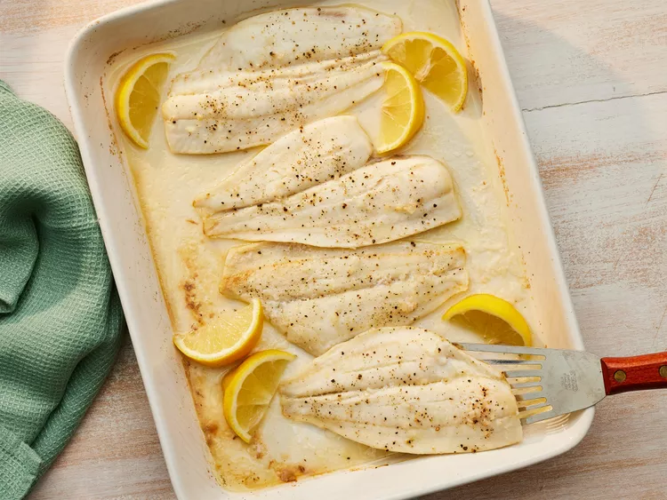

Baked Fish

Description
This baked white fish recipe is a keeper. One of our favorite past times
is fluke fishing in the Hamptons. The water is so clean you can see the
fish swim to the hook. We enjoy this basic, tasty recipe for fresh fish.
Ingredients
- 1 pound flounder fillets
- ½ teaspoon salt
- ground black pepper to taste
- 1 tablespoon lemon juice
- 2 teaspoons melted butter
- 1 teaspoon minced onion
Steps
-
Gather all ingredients. Preheat the oven to 400 degrees F (200
degrees C).
- Place flounder in a baking dish; season with salt and pepper.
-
Mix together lemon juice, melted butter, and onion in a small bowl;
pour over flounder.
-
Bake in the preheated oven until fish is opaque and flakes easily
with a fork, 25 to 30 minutes.